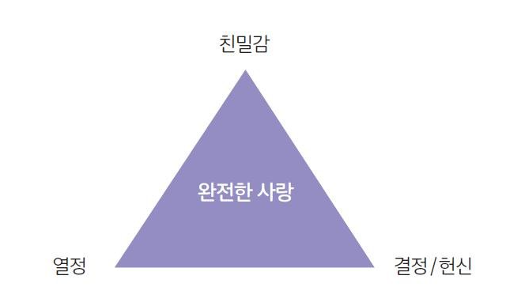
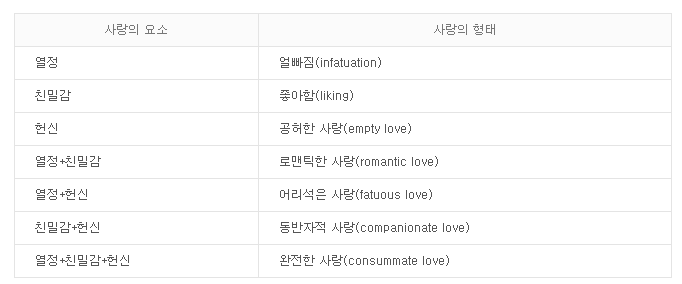
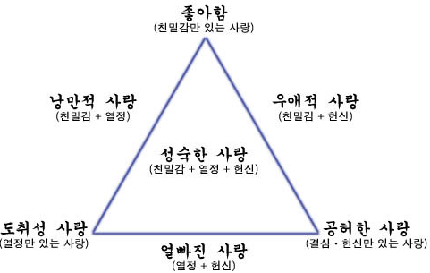

1. 스텐버그의 사랑의 삼각형 의의
미국 터프츠대학의 심리학자 스턴버그(Robert Sternberg)는 사랑의 삼각형(Triangular theory of love)이론을 병렬식으로 감정, 생각, 행동까지 포함한 다차원 구조로 분류하였다. 그는 ‘사랑의 삼각형 이론’으로 사랑을 친밀감, 열정, 결심/헌신이라는 3가지 요소로 이루어진다고 주장하였다. 이 세가지 요소는 사랑 삼각형의 세 변을 구성하고 각 변의 길이는 그 변이 대표하는 요소의 정도나 강도를 의미한다. 사랑의 크기는 3가지 구성 요소가 균형있게 증가할 때 최대한 커지기 때문에 로 지향하는 사랑의 삼각형 모양이 비슷해 지도록 서로 대화하고 조정해야 균형적 존재와 발달한다는 것이다.
2. 스텐버그의 사랑의 삼각형 이론
스텐버그는 사랑에는 세가지 주요소가 있고 친밀감, 열정, 결심/헌신으로 이 요소들의 부재에 따라 여러가지 다른 사랑의 유형이 도출된다. 삼각형의 꼭지점인 세가지 요소에 대해 먼저 살펴 보자.
1) 친밀감(intimacy)
친밀감은 사랑의 정서적 혹은 따뜻한 측면(서로에 대한 믿음이나 유대감)으로 상대방과 정서적으로 연결되어 있다는 느낌을 받는 것을 말한다. 상대가 나를 지지해주고, 도와주고, 이해해주고는 사람이라고 느끼는 것. 함께 행복해하고 의지하고 나누고 의사소통이 잘 되는 사이를 의미한다. 친밀감을 쌓기 위해서는 서로의 비밀과 삶을 공유하게 한다. 함께 보낸 절대적 시간으로 정서적 지지가 되어야 한다.
2) 열정(passion)
열정은 사랑의 동기적 혹은 뜨거운 측면(성적 욕망)을 말한다. 쉽게 얘기해서, '첫눈에 사랑에 빠졌다'라는 표현은 열정을 의미한다. 상대방에 대한 열정의 감정은 마치 중독과 같아서 상대방이 곁에 없으면 견디지 못하고 상대방을 그리워하게 만든다. 많은 관계에서 성적 욕구가 열정의 주요 부분을 차지하기도 하는 바와 같이 급속도로 감정의 정상에 도달하지만 쉽게 사그라지는 문제가 있다. 즉, 타인과의 친화, 타인에 대한 지배, 타인에 대한 복종, 자아실현 같은 욕구가 열정에 기여하기도 한다.
3) 결심/헌신(commitment)
결심/헌신은 사랑의 선택적 혹은 행동적 측면(사랑을 지속하려는 의지)을 말한다. 단기적으론 내가 상대방을 사랑해야겠다고 결심하는 것, 장기적으로는 그 결심을 지속시키는 것인데 상대의 단점뿐만 아니라 내가 좋아하지 않는 모습도 함께 포용하는 의지가 포함된다. 사랑의 결심/헌신의 두 측면이 반드시 함께 공존하지는 않는다. 많은 사람들이 상대를 사랑한다는 혹은 그와 사랑에 빠졌다는 인정을 하지 않은 상태에서 그 사람에게 헌신을 한다. 헌신은 쉽게 사라지지 않는다.그렇지만 헌신은 사랑이 지속적으로 연계되도록 단단하게 유지해주는 끈과 같다.

3. 삼각형 이론에서 주장하는 대표적인 사랑의 유형
사랑의 세 요소를 가지고 가능한 모든 결합을 해보면 여덟가지 하위요소를 얻을 수 있다. 그 여덟가지 요소가 Sternberg의 삼각형 이론의 중요한 핵심이기도 하다.

1) 좋아함(liking): 친밀감 요소만 있는 경우
좋아함은 상대를 따뜻하고 푸근하게 느끼는 감정의 유형이다. 속마음이나 고민 등을 주고받으며 위로받거나 때로는 서로를 격려해 주며, 특별할 것 없는 일상을 나누며 친밀감을 느낀다. 주로 지인이나 친구들에게 많이 느끼는 감정이다. 학창시절에 친구로 만나다가 어떤 계기를 통해 서로 가까워져 이성관계로 발전하는 경우이다.
2) 도취성 사랑(infatuated love): 열정 요소만 있는 경우
도취성 사랑은 이성적이라기 보다 맹목적이고 감정적으로 좋아한다고 볼 수 있다. 상대를 있는 그대로가 아니라 이상화시켜 생각하기 때문에 상대에게 푹 빠져 첫눈에 반하기도 하고 정신적, 육체적 흥분이 상당해 욕망을 느끼며 상대방과의 관계에 있어 책임감이 없기 때문에 금방 식어버릴 수도 있다. 지나치게 이상화 시켜 현실을 제대로 보지 못하는 사랑으로 친밀감, 결심/헌신의 요소가 결여된 열정적 흥분만으로 이루어진 사랑이다. 그것은 거의 즉흥적으로 생겨났다가 상황이 바뀌면 갑자기 사라져버릴 수 있다. 이러한 도취성 사랑은 홀린 듯 한 상태가 된다는 것이다. 사랑에 잡아 먹히고 소모되어서 다른 일에 투자해야 할 시간과 정력, 동기등을 잃게 된다. 도취적 사랑은 상대가 원치 않는 일방적인 스토킹이나 연예인이나 유명인들의 사생활까지 침범하는 바람직하지 않은 경우가 있다.
3) 공허한 사랑(empty love): 결심/헌신 요소만이 있는 경우
공허한 사랑은 상대를 사랑하겠다고 결심과 헌신만 있는 사랑이라고 볼 수 있다. 친밀감이나 열정 없이 몇 년 동안 서로 간에 감정적으로 몰입하거나 육체적으로 아무 매력을 느끼지 못하며 정체된 관계에서 주로 나타나고 있는 정체된 관계이다. 공허한 사랑이 반드시 관계의 종결을 의미하는 것은 아니다. 일방적인 사랑일 수 있다. 한 사람은 상대에게 진정한 밀착과 유대를 유지하기를 원하지만 다른 한 사람은 헌신만을 느끼는 수가 있다. 그런 비대칭적인 관계에서는 상대에게 몰입하지 않는 사람이 더 몰입한 상대에게 감정적으로 빚지고 있다는 죄책감이 더 해질 때 특히 어려워진다. 흔한 예로 기러기 아빠들의 유형이다. 육체적 대화, 일상 대화가 거의 없는 상태, 사랑과 열정보다는 그 사랑을 지속시키겠다는 책임감만 남는 경우이다.
4) 낭만적 사랑(romantic love): 친밀감과 열정 요소의 결합
낭만적 사랑은 서로에게 육체적, 감정적으로 밀착되어 있는 형태로 친밀감과 열정이 결합되어 나타난다. 낭만적 사랑은 '로미오와 줄리엣' 에 나타난 열정적으로 서로를 느끼고 또 자신의 영혼이라도 다 나타낸 것이다. 처음에는 단지 육체적인 이유로 서로 간에 매력을 느끼지만 관계의 지속에 크게 신경 쓰지 않는다. 차차 육체적 매력보다 서로의 공통점을 더 많이 깨닫게 된다. 가끔 우정으로 시작된 좋아하는 관계에서 서로를 열정적으로 끌어당기는 사랑으로 가는 경우를 볼 수 있다.
5) 우애적 사랑(companionate love): 친밀감과 헌신 요소의 결합
우애적 사랑은 친밀감과 결심, 헌신이 결합되어 생긴다. 우애적인 사랑에 만족을 느끼는 정도는 개인마다 차이가 있지만, 더 이상의 사랑을 원하지 않고, 노력 하지도 않는 중년부부나 노부부에게서 주로 나타난다. 서로에게 만족하지 못하는 경우 심한 외로움을 느끼거나 다른 상대를 찾아 외도를 하기도 한다. 즐, 어떤 사람은 자기 인생에서 그런 낭만적 로맨스가 계속 유지되지 않으면 행복하지 않을 수도 있다. 사실상 대부분의 낭만적 사랑은 차츰차츰 우애적 사랑으로 변하게 되는 경우이다.
6) 얼빠진 사랑(fatuous love): 열정과 헌신 요소의 결합
얼빠진 사랑은 서로 관계가 발전해 가는데 필요한 친밀감이 부족하고 열정과 결심, 헌신이 결합되어 나타난다. 친밀감의 형성을 위한 시간 없이 열정에 근거해서 헌신이 이루어 지기 때문에 실체가 없어 보이기도 한다. 얼빠진 사랑은 우울에 매우 민감하다. 그리고 변덕스러운 열정에 두었다는 점에서 식어갈 때 남는 것은 헌신 뿐이다. 그러나 그 헌신은 장기간에 걸쳐 성숙되고 심화된 헌신이 아니다. 사랑을 시작하기 전 상대에 대해서 충분히 알아가고 호감과 열정을 가지는 과정을 거치는 것이 필요하다. 서로 친밀감이 생기기 전에 만나 사랑을 했기 때문에 사랑이 식은 후에 위기를 맞게 된다. 이에 서로 더 알고 이해하기 위한 많은 노력을 기울여야 성숙한 형태의 사랑을 할 수 있다.
7) 성숙한 사랑(cosummate love): 친밀감과 열정과 헌신요소의 결합
성숙한 사랑은 가장 완전한 이상적인 형태의 사랑이다. 성숙한 사랑은 친밀감, 열정, 헌신의 세 가지 요소가 모두 존재하며 균형을 잘 이룬다. 이것은 낭만적 관계에 있는 사람들이 도달하려고 노력하는 사랑이다. 성숙한 사랑을 얻기는 어렵지고 또 그것을 지키기는 더욱 어렵다. 이 유형은 세가지 모든 요소를 갖추고 있는 이상적인 사랑의 유형이다. 서로 간의 관계유지에 힘쓰고, 서로에게 매력도 느끼며, 서로를 위해 헌신할 줄도 알며, 상대방과의 관계에 책임 있는 모습을 보이려고 노력해야 한다. 성숙한 사랑은 결코 거저 얻어지는 게 아닌 상대를 배려하고, 존경하고, 사랑하는 마음에서 서로가 완벽해 보이는 완전한 사랑을 의미한다. 그러나 낭만적 관계에서 완전한 사랑을 지속적으로 유지하는 것은 쉽지 않다. 이러한 관계를 유지하기 위해선 상대방을 이해하고 맞춰주며 인내하는 등의 많은 노력이 필요한 것이다.
8) 모든 요소들의 부재 : 사랑이 아닌 것(nonlove)은 우리가 경험하는 다수의 대인관계에서 나타난다. 이런 관계는 사랑도, 심지어는 우정조차도 단편적인 것이다. 우리는 이런 식으로 아는 사람들에 대해 애정과 관심을 들이지 않곤 한다.

4. 사랑의 구성 요소와 일반적인 경향
스탠버그는 친밀감, 헌신, 열정의 세 가지 요소를 분석하여 각 요소가 어떻게 적용되었는지에 따라 사랑의 유형을 7가지로 설명하였으며 이 세 가지 요소가 모두 결합되어 조화를 이루는 것이 가장 이상적이며 성숙한 사랑이라고 말하고 있다. 스텐버그가 말한 사랑의 심리적 요소 중 한가지 요소만 존재하는 건 사랑이 아니다. 친밀감만 있다면 친구, 열정만 있다면 쾌락 등의 욕구에 그친 순간의 감정일 뿐이다. 그리고 헌신만 있다면 그것은 굉장히 슬픈 일이다. 또 다른 사랑 실패의 이유는 자신의 사랑을 유형화하기 때문이다. 영원히 변하지 않는 사랑은 없고, 한 가지 유형에만 머무를 수도 없다. 사랑에 정도란 없지만 대체로 정상적인 사랑의 과정을 밟았다면 러브스토리형 사랑에서 중년부부형 사랑으로 이행된다. 그러나 많은 사람들이 사랑이 변한다는 것을 모르기 때문에 상대방과 자신에게 실망하게 된다.
친밀감과 열정, 헌신은 시간의 흐름에 따라 결과가 달라진다. 상대방을 만나자 마자 상대적으로 빨리 끓어오르는 것은 열정이다. 친밀감은 많은 시간을 같이 보내면서 천천히, 그러나 지속적으로 커져갈 것이다. 헌신은 처음에 매우 적고, 늦게, 그리고 천천히 간다. 그러나 어느 순간 이사람과 평생 같이 있고 싶다는 느낌을 받으면서 갑자기 커진다. 이렇게 늦지만 한번 시작되면 계속 성장하는 친밀감,헌신과 달리 열정은 빨리 끓은 것만큼 빨리 식는다.
가장 효과적인 사랑은 열정이 식기전에 친밀감과 헌신을 쌓아서 열정에 치중한 사랑이 진정한 사랑으로 거듭나는 사랑이다. 열정에 빠져 헌신적이고 낭만적인 사랑은 영원할 수 없다. 그 사랑을 성숙한 사랑으로 발전시키기 위해 우리는 끊임없이 많은 노력을 해야 할 것이다. 상대방이 가지고 있는 가치관은 무엇인지 나와 다른 점을 어떻게 이해하려 노력할 것인지, 상대방의 감정은 어떠한지 등 상대방과 충분한 대화를 나누고 시간을 갖는다면 도움이 될 것이다.
과거엔 어떤 유형의 사랑을 해보았으며 지금은 나는 어떤 유형의 사랑을 하며 지내고 있는 것일까라는 생각을 하면서 몸소 겪고 느끼고 있어야 할 것이다. 내가 생각하는 사랑을 지키는 가장 확실하고도 현실적인 방법은 정이라고 하는 친밀감과 헌신이 커질 때가지 열정이 꺼지지 않도록 노력해야 할 필요성이 존재한다.
【참 고 문 헌】
로버트 스텐버그(2001). 사랑의 심리학, 하우기획출판.
유영달, 이희영, 김용수, 이동훈, 하도겸(2013). 인간관계의 심리. 학지사.
이태손(2015). 기혼자들의 성격특성과 사랑유형이 결혼만족도에 미치는 영향, 대구한의대.
정주원(2020). EBS 독학사 유아교육학과 3단계 부모교육론. 독학사.
하주영(2012). 우리 사랑은 영원할까 : 낭만적 사랑의 진화, 비글 인디북스.